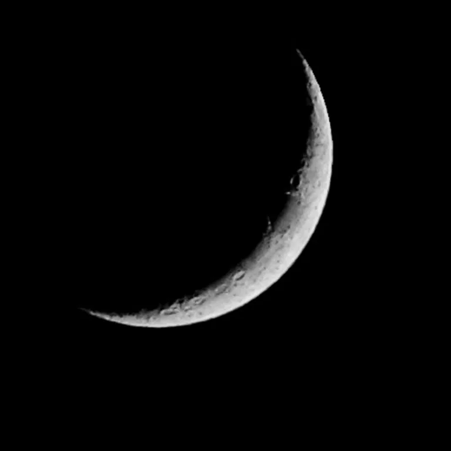
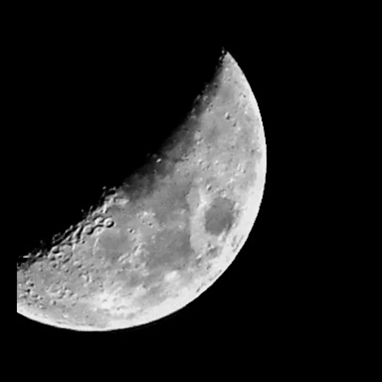
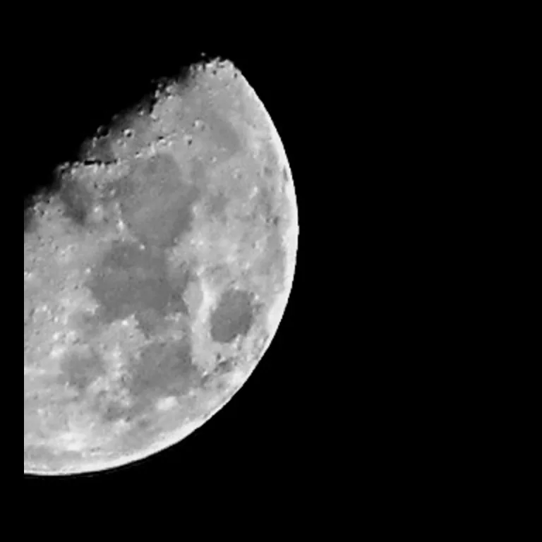
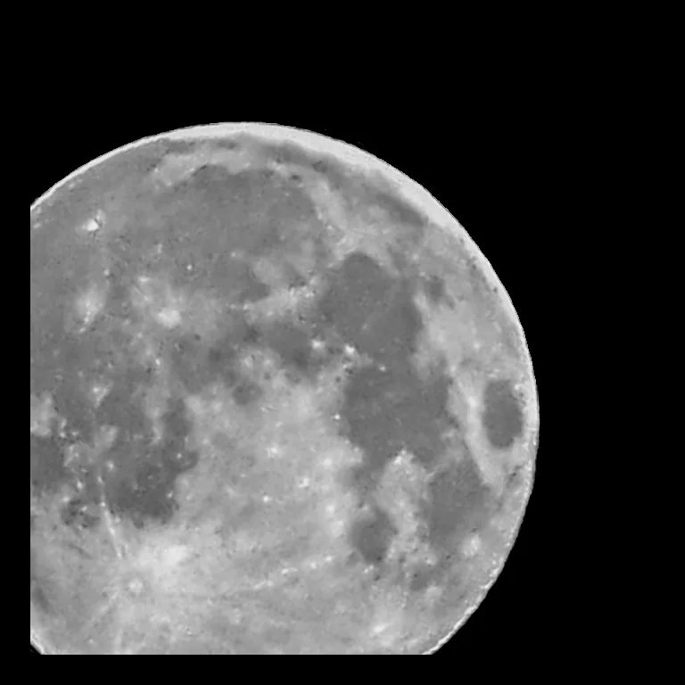
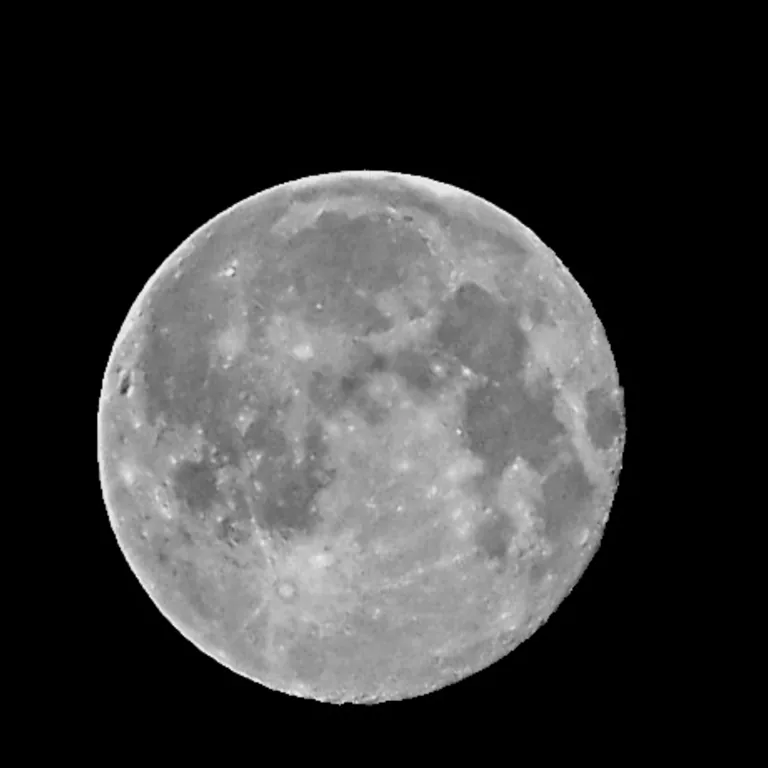
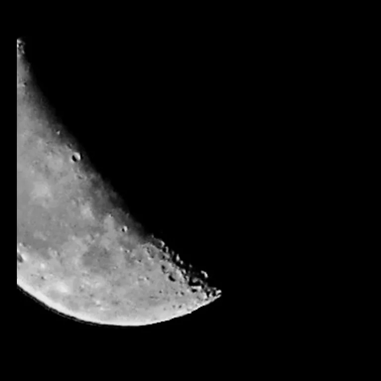
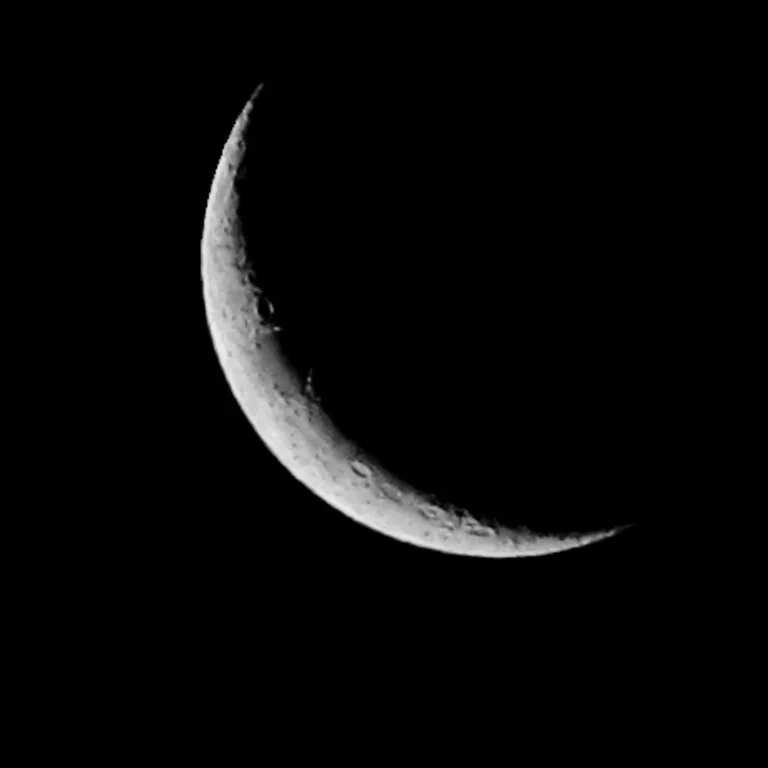
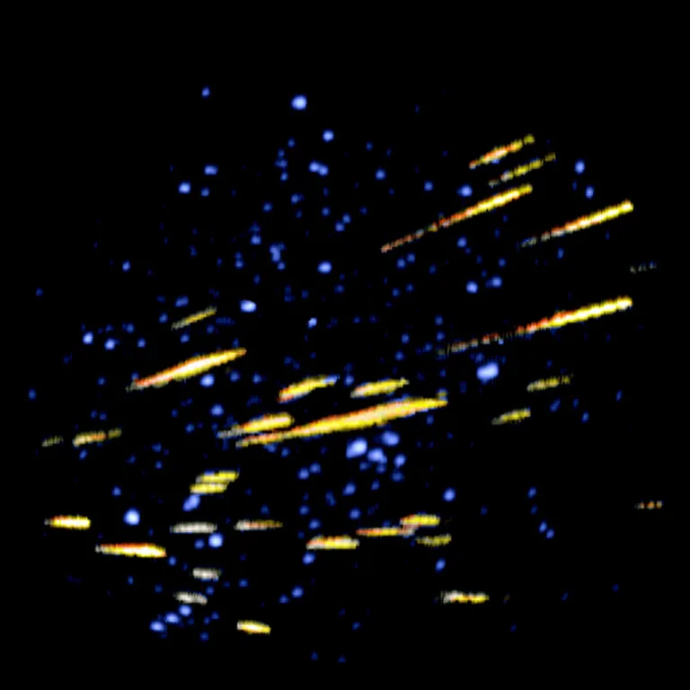

Meteorické roje, slunovraty/rovnodennosti a fáze měsíce pro zvolený rok







Proč je nov černý? Měsíc je tehdy na obloze blízko Slunce a jeho osvětlená polokoule směřuje od Země. Černá karta tedy není chybějící obrázek.

| Roj | Vrchol | Nejlepší pozorování |
|---|
Data vrcholu jsou přibližná a rok od roku se mohou lišit o 1–2 dny. Pro pozorování hledej co nejtmavší oblohu po půlnoci, ideálně bez měsíčního svitu.
| Úkaz | Přibližné datum |
|---|
Přesný okamžik se rok od roku posouvá o cca ±1 den kvůli délce tropického roku.
| Fáze | Datum |
|---|
Vypočteno lokálně z osvětlení měsíčního kotouče (SunCalc), přesnost ±1 den v UTC.